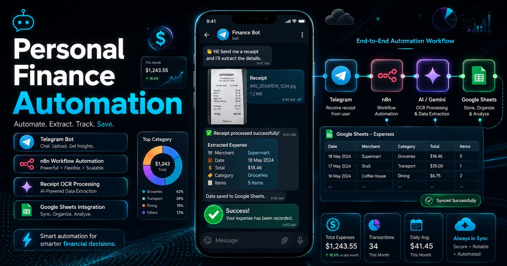
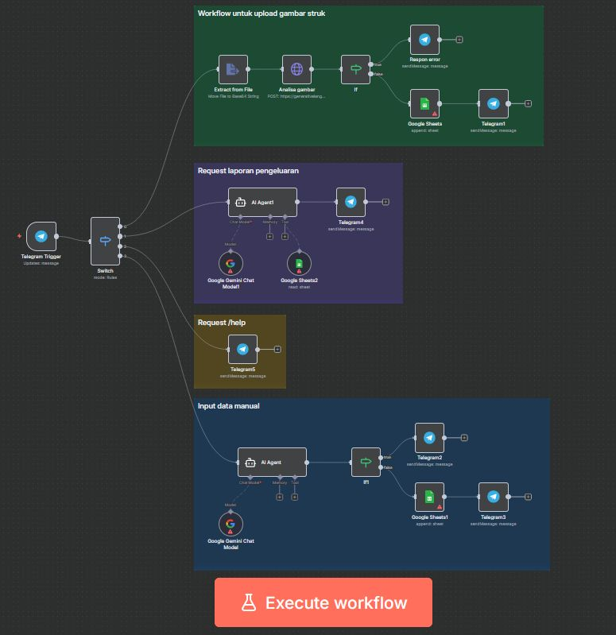
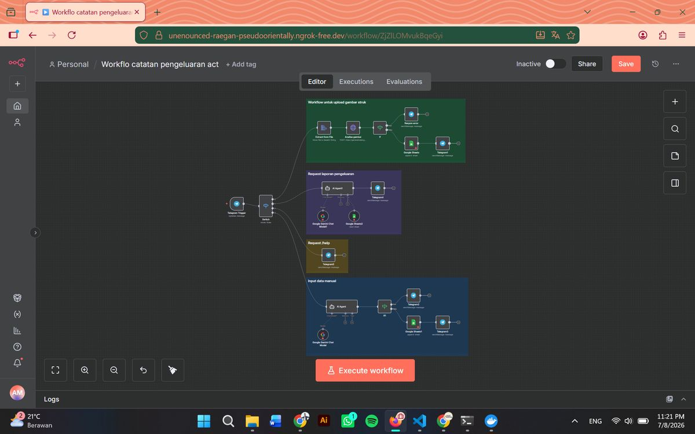
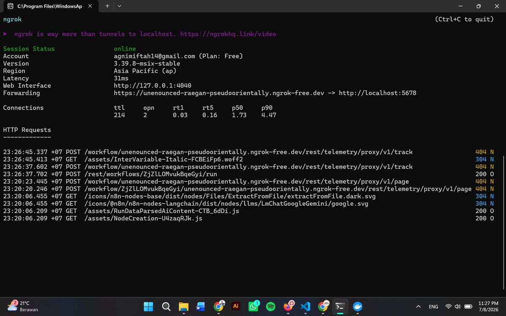
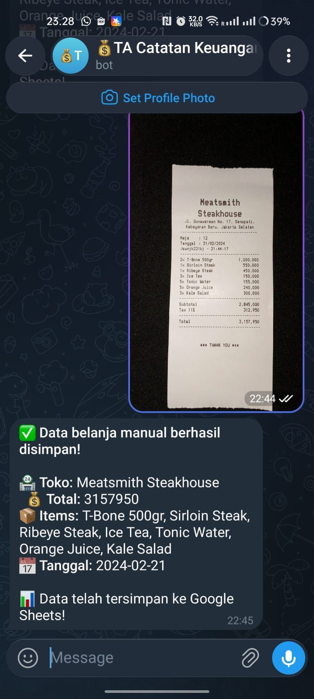
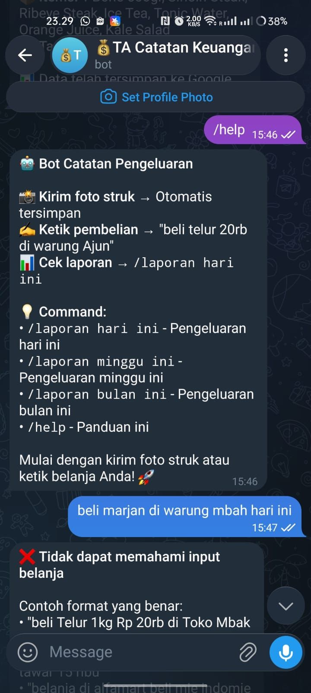
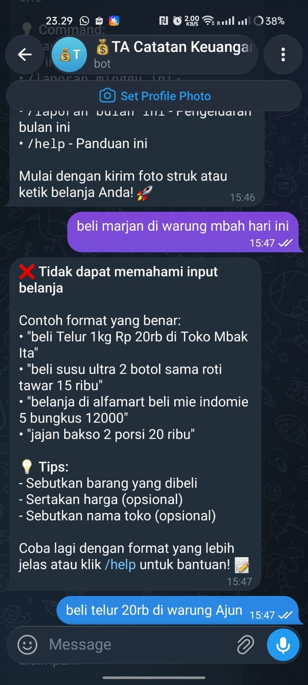

Project documentation — Index 03
Caku Automation
AI-enhanced personal finance automation: send a receipt photo to a Telegram bot, get structured data filed into Google Sheets — no app, no manual entry.

Project documentation — Index 03
AI-enhanced personal finance automation: send a receipt photo to a Telegram bot, get structured data filed into Google Sheets — no app, no manual entry.

Caku Automation is the companion to Caku Finance — same problem (receipts are annoying), different shape. Instead of a mobile app, it is a pipeline: an n8n workflow orchestrates a Telegram bot, Google Gemini OCR, and Google Sheets into one automated bookkeeping loop.
The flow is short by design. You send a receipt photo to the bot. n8n receives the file, encodes it, asks Gemini to extract the structured data, and writes the result to a spreadsheet — then the bot confirms back to you with what was saved. The whole workflow is self-hosted in Docker with an ngrok tunnel for webhook access.
Interactive bot for receiving commands and receipt uploads directly from users.
File upload handling with Base64 encoding feeding the OCR pipeline.
Google Gemini extracts structured data from receipt images automatically.
Parsed expenses written and synchronized to a cloud spreadsheet.
Telegram notifications for workflow errors and status updates — failures are never silent.
Text-based expense entry for receipts that cannot be photographed.
Photo → Telegram → n8n webhook → Gemini OCR prompt → parsed JSON → Google Sheets row → confirmation message back in Telegram. If any node fails, the error branch sends a notification instead of dropping the receipt on the floor.





